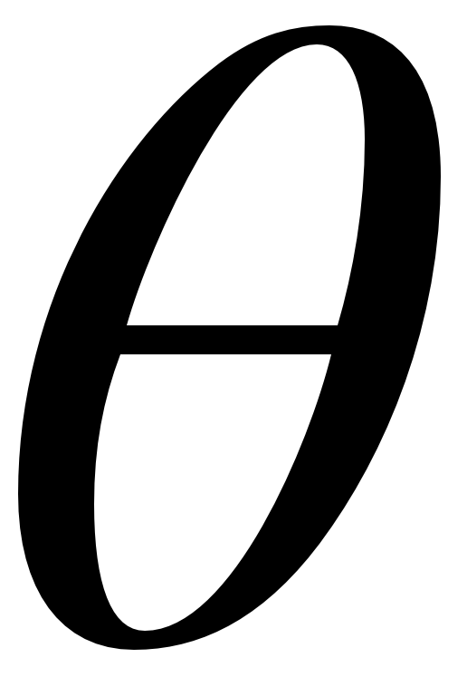

Using an RBM to retrieve damaged images. An RBM is an energy-based model that can learn patterns such as MNIST digits. Through equilibration, the RBM reaches a low-energy state and retrieves a learned pattern. Dependent on the initial states, it is possible to reach different low-energy states and find different patterns.
We present an overview of energy-based models from a physical perspective. Rather than a purely mathematical formulation of the main concepts, we motivate energy-based models by connecting to the physical behaviour of interacting particles. We explain familiar concepts from different perspectives and uncover key physical concepts underlying the theory and practice of energy-based models. This includes the design, implementation, and training of Hopfield networks and Boltzmann machines , highlighting how physical principles can explain both the success and challenges associated with these models. We focus on these models because of their historical significance — which paved the way for future revolutions in the field — and because of their immediate connection to fundamental physical principles. Additionally, attention is placed on using physics to understand important concepts such as energy functions, Boltzmann distributions, and contrastive divergence . Finally, we reflect on the possible future trends on machine intelligence based on recent advances, shining light on cutting-edge research at the interface of physics and machine learning.
An energy-based model is a probabilistic model governed by an energy function that describes the probability of a certain state. Energy-based models emerged in the machine learning literature in the 1980s . They have since been further developed, extended, and improved over several decades of work . Some energy-based models have recently been “back-ported” to physics, and used for example to model the wavefunctions of quantum systems . Furthermore, they are still being employed in other areas , and they have become competitive with GANs for specific tasks . Many types of energy-based models are generative, guaranteed to sample a valid probability distribution, and can often be stacked to create deep, hierarchical representations . More recent developments include their use in reinforcement learning , as potential replacements for discriminators in GANs , and the appearance of quantum energy-based models .
To understand the origin of energy-based models, imagine a scientist with the goal of designing a physical system that is capable of learning and memorizing patterns. An initial strategic choice is to use the random behaviour of the particles to model the probability distribution of some data that should be learned. The goal is to design probabilistic systems that harness randomness to generalize memorized patterns. Mathematically, a probabilistic system is characterized by a probability distribution that determines the likely states of the system. The challenge is to design systems that are sufficiently complex to give rise to rich behaviour, but also simple enough such that they can be efficiently trained and characterized.
For large systems, it is overwhelmingly difficult to keep track of all their rapidly-fluctuating internal degrees of freedom. Typically only coarse-grained information can be accessed, meaning that we can only keep track of macroscopic properties of the system and not of all degrees of freedom.
An example for such a coarse-grained information is the total energy , which can be theoretically determined for any given state of the system.
More precisely, the total energy of a system is defined in terms of an energy function E(x) which assigns energy values to all its possible states.
The state of an n-particle system can be described as x=(x_1, x_2, \ldots, x_n) , where x_i denotes a relevant degree of freedom of the i-th particle.
What probability distribution P(x) can be assigned to a state x with energy E(x) ? If we do not have any information — and therefore no constraint — about a particular degree of freedom, we should remain maximally flexible in the choice of model while remaining consistent with the quantitites that are constrained. Therefore, it is reasonable to choose the distribution with maximum entropy
The entropy of a system is given by S = \sum_x -P(x)\log P(x), where
P(x) is the probability of a state x. If all states are equally likely, the entropy is maximal. If only one state P(x) = 1 then the entropy is minimal.
because the maximum entropy model reduces the amount of potentially biased or unsubstantiated prior information built into a model. This strategy is known as Jaynes' maximum entropy principle . It states that in assigning a model on the basis of partial available information, the distribution with the largest possible entropy should be chosen. The resulting distribution P(x) is the solution to the optimization problem
\begin{aligned}
\max_{P(x)}\,\, &\sum_x -P(x)\log P(x) \\[0.4em]
\text{s.t. } &\sum_x P(x) E(x) = \langle E \rangle,
\end{aligned}
giving
P(x) = \frac{1}{Z} \exp\left[ - E(x)/T \right],
where T is a free parameter and Z=\sum_x \exp[- E(x)/T] is a normalization constant known as the partition function. This probability distribution first appeared in statistical physics and is now widely used in other fields. In its original physical interpretation, the Boltzmann distribution describes the probability of finding a system in a state x when the system is in thermal equilibrium with a heat bath at temperature T
By definition, being at thermal equilibrium with a bath of temperature T means that the system is also at tempearature T . The temperature determines the average energy of a system. With large T the probability of high energy states increases, and so does the average energy.
. The Boltzmann distribution establishes a concrete relationship between energy and probability: low-energy states are the most likely to be observed.
The energy function of a physical system can be expressed as a sum over contributions arising both from the internal energy of each particle and the interactions between them. In such cases, the energy function can be written as
E(x) = \sum_i \theta_i f_i(x),
for appropriate parameters \theta_i and functions f_i(x). The resulting Boltzmann distribution at temperature T is uniquely determined by the parameters \theta_i or, equivalently, by the expectation values \langle f_i(x)\rangle, which are the sufficient statistics For any distribution in the exponential family, a statistic T(x) is sufficient if we can write the probability p(x) as
p(x) = \exp \left( \alpha(\theta) T(x) + A(\theta) \right),
where \alpha(\theta) is a vector-valued function and A(\theta) is a scalar, which for a Boltzmann distribution is related to the partition function as A(\theta) = \log(1/Z). of the distribution.
Knowledge of the expectation values \langle f_i(x)\rangle fixes the parameters \theta_i and therefore also the properties of the resulting Boltzmann distribution. The parameters \theta_i determine the relevance of these expectation values in minimizing the energy. When a particular \theta_i is small, the corresponding sufficient statistic, i.e, the state of the particle or the interaction term, will be largely irrelevant in its contribution to the energy.
It is important to recognize the role of temperature: it determines the relative probability of observing higher-energy states, not just the lowest energy ones. In the limit of zero temperature, only those states corresponding to global minima of the energy function can be observed. In the limit of infinite temperature, all states are equally likely. Physically, temperature quantifies the average energy of the interactions between the system and environment. Such exchanges lead to sporadic "jumps" towards states of higher energy. The higher the temperature, the more common and widespread such jumps will be. The role of temperature in the Boltzmann distribution is illustrated in the figure below, where you can study the effect of varying temperature and energy-function parameters.
Boltzmann distribution with changing interaction and temperature: The effect of the temperature T and the interaction strength w on the Boltzmann distribution of a two-particle system. The histogram on the left shows the probability of each possible configuration, where x_i \in \{-1, +1\} (red / grey). The energy function is E(x_1, x_2) = -w x_1 x_2 . The sign of the interaction determines which configurations are more likely: if w<0, opposite configurations x_1=-x_2 have lower energy (higher probability). If w>0, equal configurations x_1=x_2 have lower energy (higher probability). Increasing the temperature T makes high-energy configurations more likely. In the limit of very large temperatures, states become approximately equiprobable regardless of interaction strength.
The next step in designing an energy-based model is to select the energy function. We start with arguably the simplest interesting model: a collection of particles with two degrees of freedom whose energy function depends on the individual state of particles and the pairwise interactions between them. The states of n such particles are described in terms of the vector \sigma=(\sigma_1, \sigma_2, \ldots, \sigma_n) , where \sigma_i\in\{-1, 1\} is the state of the i-th particle. The resulting energy function is
E(\sigma) = -\sum_i b_i \sigma_i - \sum_{ij} w_{ij} \sigma_i\sigma_j.
This energy function is known as the Ising model . The parameters b_i set the individual energies of the particles, which depend on the state b_i \sigma_i = \pm b_i.
The parameters w_{ij} introduce energy contributions due to pairwise interactions: for w_{ij}<0, equal states (\sigma_i=\sigma_j) have higher energy. For w_{ij}>0, opposite states (\sigma_i = -\sigma_j) lead to higher energies
There are other conventions for the Ising energy function in the literature, where the signs of the energy terms change. For example
E(\sigma) = \sum_i b_i \sigma_i + \sum_{ij} w_{ij} \sigma_i\sigma_j.
We follow the convention introduced above.
. This energy-based model is known as a Hopfield network. The parameters w_{ij} in the energy function can be viewed as weighted edges in a graph and therefore the model can be represented by a network — a neural network, when particles themselves are viewed as neurons.
What tasks can be performed with this model? Consider the zero-temperature case. At equilibrium, only the lowest-energy states can be observed. If the system is set to a state with higher energy and allowed to equilibrate back to zero temperature, it reverts to one of the ground states with lowest energy. If data is encoded into the ground states of the system, this model has the ability to retrieve data instances from incomplete or corrupted inputs, which are non-equilibrium states. The model can serve as an auto-associative memory, capable of "remembering" patterns when similar ones are given as input.
The energy function of Hopfield networks considers only pairwise interactions. Extending the scope to more complicated models is possible, but comes at a significant price: they will typically be more difficult to train, analyze, and simulate. Instead, new particles can be added to the network which are not used to represent data, but whose role is to increase the overall complexity of the model. They are referred to as hidden nodes (as in nodes in a network) and act as intermediaries between the remaining visible nodes, which encode data. Each collection of hidden or visible nodes is known as a layer.
Physically, the hidden nodes enable effective higher-order interactions between visible nodes, leading to a new effective energy function for the visible nodes . The resulting networks are called Boltzmann machines, in allusion to the Boltzmann distribution governing their behaviour. They are generalizations of Hopfield networks in the sense that these are contained as a special case: a Boltzman machine simplifies to a Hopfield network when the interactions w_{ij} between hidden and visible nodes are set to zero. Importantly, Boltzmann machines are not only more powerful than Hopfield networks, but in a sense as powerful as can be: they are universal approximators, in principle able to replicate any discrete probability distribution with arbitrary precision
.
Simulating and training Boltzmann machines can be challenging. To facilitate progress, models can be studied where some connections are set to zero. In the most extreme case, all intralayer connections are removed, leaving present only connections between visible and hidden nodes. The resulting models are known as Restricted Boltzmann machines (RBMs). Conventionally, the state of an RBM is written in terms of visible (v) and hidden (h) nodes, \sigma=(v, h), with its energy function given by
E(v, h)= -\sum_i b_iv_i-\sum_j c_jh_j - \sum_{ij}w_{ij}v_ih_j.
Compared to the fully-connected Boltzmann machine, the RBM is less expressive because it has fewer parameters. Nevertheless, the advantages gained in simulating and training these models surpass the loss in expressivity, especially since less complex models tend to generalize better . The three fundamental energy-based models we study in this article, Hopfield networks, Boltzmann machines, and RBMs, are illustrated in the figure below where we introduce the different architectures and illustrate how hidden nodes can make the model more complex.
When the energy function doesn't include bias terms, Hopfield networks and Boltzmann machines have a so-called flip symmetry: ff we flip the values of all the nodes, the states before and after the flip have the same energy. Therefore patterns that differ by a flip on all nods cannot be differentiated. Adding hidden nodes can break this symmetry by assigning non-symmetric hidden-node states to each visible pattern.
The figure below illustrates this behavior.
Hopfield network: The number of nodes is equal to the size of the input data. There are no hidden nodes (dashed) contributing to the energy, which limits the expressive power of this model. Clicking on the nodes flips all their values, but for a Hopfield network with no bias terms these two states have the same energy. You can hover over the nodes and the connections for extra information.
Boltzmann machine: The Boltzmann machine network is fully connected. The visible nodes (black or white) are clamped to the input data and the hidden nodes (red or grey) are free parameters. We keep this color scheme throughout the article to distinguish between hidden and visible nodes. We assign different hidden patterns to the flipped visible configuration, so the flipped visible nodes have different energies before and after the flip.
Restricted Boltzmann machine: RBMs use hidden and visible nodes, but connections are not allowed within the same layer, i.e., the network is bipartite. This restriction greatly simplifies training.
From a physical perspective, sampling from the Boltzmann distribution is conceptually straightforward: just place the system in contact with an environment at the desired temperature and register the system's state at different times. But building these systems and engineering their energy functions is extremely challenging in practice. Instead, the challenge we undertake is to simulate them using computer algorithms.
Consider first the zero-temperature case. The key physical principle underlying the Boltzmann distribution is the connection between energy and probability. A strategy to simulate sampling from a Boltzmann distribution is to identify low-energy states and, depending on the temperature, ocassionally select also states with higher energy. One simple method is to locally change the state of each particle such that it decreases the total energy of the system. For an Ising energy function, the change in energy (\Delta E) introduced by changing the i-th particle's state from \sigma_i to -\sigma_i is
\Delta E_i = -2\sigma_i(b_i+\sum_j w_{ij} \sigma_j).
To search for equilibrium states, we iteratively apply the update rule
\sigma_{i}\rightarrow \begin{cases}
-\sigma_i&~{\text{if }} \Delta E_i < 0,\\
\sigma_i&~{\text{otherwise}},
\end{cases}
that flips the value of the node only if this change decreases the energy.
Starting from a random initialization, by repeatedly updating the state of individual particles, the system's state converges to a local minimum . This method is not guaranteed to find the true ground states, i.e., global minima of the energy function. For finite temperature, the strategy is similar, except that it is now possible to ocassionally jump to higher-energy states. In this case, the update rule is:
\sigma_{i}\rightarrow \begin{cases}
-\sigma_i&~{\text{if }} \Delta E_i < 0,\\
-\sigma_i& \text{with probability }\, p, \, \text{ if }\Delta E_i \geq 0,\\
\sigma_i& \text{with probability }\, 1-p, \,\text{ if }\Delta E_i \geq 0,
\end{cases}
where p = \exp(-(1/T) ~\Delta E_i) . Physically, these jumps to higher-energy states mimic the random thermal fluctuations arising from exchanging energy with an environment at finite temperature. This sampling algorithm is a specific instance of the Metropolis-Hastings algorithm , which is particularly convenient when the distribution is known up to a normalization constant, as is the case for the Boltzmann distribution. The figure below illustrates the algorithm in action.
Temperature T :
Sampling from a Boltzmann distribution. The figure shows a simplified energy landscape where the minima of the energy function correspond to states that encode an MNIST digit. Neighbouring states are variants that become increasingly noisy as energy increases. The sampling algorithm begins from a randomly chosen state, which you can choose by clicking on the corresponding yellow point. At very low temperatures, each step of the algorithm updates the state to one with lower energy, until we reach and stay at a local minima. The current state is highlighted in red. At higher temperatures, each step of the algorithm may jump to higher-energy states and the final sampled state may not necessarily be a local minimum.
One possible improvement to this algorithm is to find models where the local update rule is even better at finding low-energy states. The issue with local updates is that the change in energy \Delta E_i = -2\sigma_i(b_i+\sum_j w_{ij}\sigma_j) for node i depends on the states of all other nodes. Therefore, each time a state \sigma_i is updated, the effect spreads out to all other nodes, changing their local update rules. But for an RBM, this is not exactly the case. The energy change in a visible node, \Delta E_i = -2v_i(b_i+\sum_j w_{ij}h_j), does not depend on any of the other visible nodes: when one of them is flipped, other visible nodes are unaffected. This makes the local update rule more effective because the entire collection of visible nodes can be treated as a single entity. A similar statement holds for updating hidden nodes when the visible ones are fixed. In fact, the lack of intralayer interactions in an RBM implies that the conditional probabilities P(v|h) and P(h|v) factorize:
Moreover, because of the independence between nodes in the same layer, the individual conditional probabilities can be calculated analytically, and are given by:
The remaining probabilities P(h_j=-1|v) and P(v_i=-1|h) follow from these equations. These properties of RBMs permit a new sampling strategy:
Fix the hidden nodes. Sample visible nodes from the conditional distribution P(v|h) = \prod_i P(v_i|h) by independently sampling the state of each node from its distribution P(v_i|h).
Fix the visible nodes according to the samples of the previous step. Sample hidden nodes from the conditional distribution P(h|v) = \prod_i P(h_i|v) by independently sampling the state of each node from its distribution P(h_i|v).
Repeat the above steps N times, for suitably chosen N.
The resulting states (v, h) will be approximately sampled from the system's Boltzmann distribution. This algorithm is known as Gibbs sampling, and it is the method typically used in practice to sample RBMs.
We have learned that probabilistic models can be built from the same principles as physical systems at thermal equilibrium. We have also identified useful architectures and have developed algorithms to sample from their Boltzmann distributions. A final challenge remains: how can these systems be trained to perform specific tasks? In this context, training is equivalent to identifying the parameters of the energy function that give rise to a desired probability distribution.
For illustrative purposes, consider a simple physical system: a mass m attached to a spring. The spring is characterized by a constant k and the mass experiences a position-dependent force F(y)= -k y, where y is the displacement of the mass. If the mass is placed in a gravitational field, it experiences a constant external force F_g = mg , where g is the acceleration due to gravity. The mass is only in equilibrium at the precise position where these two forces balance, i.e., when F_g+F(y) = 0.

Training and equilibration. Equilibrating forces in a spring-mass system compared to training coupled nodes. The mass is fixed and the gravitational force F_g is constant. The forces are in equilibrium if the spring is extended to a position such that F(y) = F_g, i.e., such that the total force F is zero. In a simple energy-based model, the external "force" F_d , which is the expected value of the nodes over the data, is constant. Training consists of identifying the coupling \theta such that the ficticious force F(\theta) equilibrates with the data "force", F(\theta) = F_d.
For a model with a single-parameter energy-function E(x) = \theta f(x), the expectation value \langle f(x) \rangle is a sufficient statistic of the Boltzmann distribution — knowing this expectation uniquely fixes the parameter \theta and therefore also the distribution P(x)=\frac{1}{Z}\exp[-\theta f(x)/T] . The goal is to train an energy-based model to reproduce the statistics of a dataset, specified as a set of states
(x^{(1)}, x^{(2)}, \ldots, x^{(N)}). Training the model is equivalent to identifying the parameter \theta such that the sufficient statistics of the model coincide with those of the data, i.e., such that \langle f(x) \rangle_{\text{model}} = \langle f(x) \rangle_{\text{data}}. Since the expectation over the model distribution depends on \theta, we can write \langle f(x) \rangle_{\text{model}} =: -F(\theta) for a suitable function F(\theta) . The expectation over data is constant, so we can write \langle f(x) \rangle_{\text{data}} =: F_d . Interpreting these as generalized forces acting in opposite directions, and the parameter \theta as a generalized position, the model is trained when the position \theta is such that the forces are in equilibrium: F_d+F(\theta)=0.
When forces are unbalanced, for instance if the pull of gravity outweighs the restoring force of the spring, objects accelerate and change position. For an object starting at rest, the initial displacement due to an inbalance of the forces is
where \eta>0 is a constant that depends on the object's mass and the time for which the forces act. The first force F_d can be interpreted as an external force due to an outside system, like the Earth's gravitational field. For energy-based models, the external system is actually a set of training data that provides a constant "pull" towards the preferred states appearing in the dataset.
The second force F(\theta) represents the system's natural preference for certain states. This provides an internal lift, working against the downward pull of the training data. Crucially, in the presence of two competing forces acting in different directions, the resulting displacement causes the object to move to a position that reduces the inbalance of forces. For example, in a spring-mass system, if F_g> ky , the mass is pulled downwards to a new position y'>y that increases the force due the spring, bringing both forces closer to balance. By repeatedly applying the update rule above for sufficiently small step sizes, a parameter value that balances the two fictitious forces can be found, leading to a trained model. We now develop this physical intuition into concrete training strategies for energy-based models.
Training a Hopfield network is equivalent to identifying parameters such that the ground states of the energy function are the states of the input data. Suppose we are given a single n-dimensional data vector \sigma^{(1)}. There is a straightforward way to ensure it is a ground state: set all b_i=0 and fix w_{ij}=-\sigma^{(1)}_i\sigma^{(1)}_j. The energy function is then E(\sigma)=-\langle \sigma^{(1)}, \sigma \rangle, which attains its minimum when the inner product is maximized, i.e., when \sigma=\sigma^{(1)}. For more data points \sigma^{(1)}, \sigma^{(2)}, \ldots, \sigma^{(N)}, we follow a similar rule, this time setting the interaction parameters to
w_{ij}=-\frac{1}{N}\sum_{k=1}^N\sigma^{(k)}_i\sigma^{(k)}_j=\langle \sigma_i \sigma_j \rangle_{\text{data}}.
Note the appearance of the ficticious force we studied before. This strategy is known as Hebbian learning and works best when all data vectors are nearly mutually orthogonal, in which case all data points are local minima of the energy function . If not, so-called spurious minima can appear that do not correspond to data vectors, leading to erroneous memory retrieval .
To address the issue of spurious minima, the concept of “unlearning” was introduced to improve the performance of Hopfield networks . For unlearning, parameters are set according to
where \epsilon>0 is a small parameter. The model equilibrium states \{\tilde{\sigma}^{(1)},\ldots, \tilde{\sigma}^{(N)} \}
are obtained by choosing a random initial state and using the sampling algorithms described earlier to find equilibrium states.
During sampling, the weights of the model are set according to the Hebbian rule. The addition of this expectation value over model states leads to an increase in energy of all minima, including spurious ones.
By appropriately selecting the value of \epsilon, this increase in energy can lead to the disappearance of spurious minima, which are consequently "unlearned".
Training an RBM: Biases can be adjusted by moving the node inside the "bias field". Weights can be adjusted by using the 2D slider. The histograms on the right show how probable a certain state becomes. We encourage the reader to attempt to adjust the parameters of the RBM such that it learns a certain data pattern, i.e. make a specific visible state most likely.
Hebbian learning and unlearning techniques are problematic when applied to Boltzmann machines: since only the visible nodes encode data, it is not clear how to assign values to the hidden nodes. The Hebbian learning rule can be promoted to an update rule that iteratively improves the weights with each step. By doing so, we allow the hidden nodes to "move" together with the visible ones, leading to training of the complete model. Starting from an initial value w_{ij}, a weight is updated to
where \eta>0 is a small learning rate. Whenever \sigma_i\sigma_j includes hidden nodes, averages over the data are taken by fixing the visible units to the data and then using Gibbs sampling to obtain values for the hidden nodes. In the specific case of an RBM, when setting \epsilon=1, the update rule takes the form
This rule is known as the contrastive divergence formula for training RBMs. The Hebbian learning term \langle v_i h_j\rangle_{\text{data}}, usually referred to as the positive phase, decreases the energy of the states of the training data. The unlearning term \langle v_i h_j\rangle_{\text{model}} (the negative phase) increases the energy of all the states that are near equilibrium. The figure below illustrates how the competing Hebbian learning term and the unlearning term can help to learn a pattern while avoiding local spurious minima.
Learning and Unlearning: A randomly initialized system has an energy landscape (here represented by a simplified curve) with many different local minima. In physics this is often referred to as the spin-glass phase . In energy-based models, learning a certain state (red dots) means that their energy needs to be decreased. This can be achieved through "learning steps" that locally update the weights of the model as to decrease the energy of data states, with what we referred to as the Hebbian learning term (positive phase). You can try this by clicking on the "Without unlearning" button. This strategy suffers from the drawback that the energy of other points can be local minimas, dependent on the initialization of the system. Instead, by alternating between learning and unlearning steps — which you can do by clicking on the "With unlearning" button — the occurrence of spurious minima can be reduced with the unlearning term (negative phase). Hovering over the orange and red dots shows which patterns they represent. On the left we show what happens with the energies of certain states from a more global perspective.
The role of contrastive divergence is to gradually shape the energy function of the model until all low-energy states of the model correspond to data points. Viewing the weights as generalized positions, we interpret the term \Delta w_{ij}:=\langle v_i h_j \rangle_{\text{data}} - \langle v_i h_j \rangle_{\text{model}} as a net force originating from two competing forces: a fixed external one due to data, and an internal force due to specific generalized positions of the system. When the forces are not balanced, this causes a shift in position in a direction that brings the forces closer to balance. Each shift in weight propagates across the entire model affecting all forces, so the strategy of the contrastive divergence training algorithm is to set a small learning rate \eta until all forces are balanced and the model is trained.
The figure below collects the concepts we have covered thus far, showing how a trained RBM can recover data instances from corrupted inputs. Once the model is trained, the minima of the energy function correspond to the encoded data. A damaged input, which has a large energy, can be repaired by allowing the system to equilibrate back to low-energy states.
Using an RBM to retrieve damaged images. In this example, visible units of a trained model are initialized with a partially damaged MNIST digit. Low-energy states of the trained model correspond to true MNIST digits, so the input can be repaired by updating the nodes of the network until they correspond to equilibrium states. This can be achieved through Gibbs sampling. In the first step, visible nodes are fixed, and hidden nodes are updated by sampling their new state from the conditional distribution P(h|v). The next step fixes the hidden nodes and samples visible nodes. This process is repeated, lowering the energy (visualized with an artificial curve) with each step until an equilibrium state is retrieved.
Outlook: Future Research in Physics and Machine Learning
Energy-based models are experiencing a resurgence of interest: they are stable to train, require few parameters, show high sample quality, generalization ability, and are amenable to compositionality . These are characteristics that other generative models like variational autoencoders or generative adversarial networks struggle with. Progress has also been made to improve the scaling of training . With these developments, there is an indication that this family of models continues to be relevant in machine learning. However, energy-based models also need improvements on several frontiers.
Learning and inference over discrete data are still extremely challenging due to the combinatorial explosion of the state space, often referred to as the curse of dimensionality. In particular, training and probabilistic inference in energy-based models are still inefficient. This is due to the hardness of discrete optimization problems, which is equivalent to calculating the partition function or sampling over the Boltzmann distribution. There is a significant opportunity for developing physics-based models that address these difficulties, in particular quantum models that we discuss below. There are exciting emergent areas of research at the interfaces of machine learning, quantum computing, many-body physics, and optimization. This convergence provides a unique opportunity to make contributions at the mutual interfaces between these major disciplines.
In quantum mechanics, the possible states of a system are extended to also include linear combinations, known as superpositions, over different states. For instance, states of n particles were previously denoted by vectors x = (x_1, x_2, \ldots, x_n). In a quantum setting, more general states \psi are possible, having the form
\psi = \sum_x c(x) x,
where the complex coefficients c(x) satisfy \sum_x |c(x)|^2=1. This property gives rise to concepts such as interference and entanglement. The second change is that energy functions, usually referred to as Hamiltonians in this context, are replaced by operators. They generally take the form
\hat{H}=\sum_i \theta_i \hat{h}_i(x),
where hats are used to denote that these are operators. This change has profound implications: operators generally do not commute, i.e., it may hold that [\hat{h}_i, \hat{h}_j]:= \hat{h}_i\hat{h}_j-\hat{h}_j\hat{h}_i\neq 0. This property underlies concepts such as the uncertainty principle and the no-cloning theorem .
As a concrete example, we can describe a quantum Boltzmann machine, with a Hamiltonian
\hat{H} = \sum_i b_i\hat{\sigma}^{(z)}_i + \sum_{ij} w_{ij} \hat{\sigma}^{(z)}_i\hat{\sigma}^{(z)}_j.
The individual operators \hat{\sigma}^{(z)}_i, when expressed as matrices, take the form
\hat{\sigma}^{(z)}_i = \begin{pmatrix} 1 & 0\\
0 & -1
\end{pmatrix}.
The superscript is used to denote a specific basis in which the operator is diagonal. This model can be made more interesting by using non-commuting operators
\hat{H} = \sum_i b_i\hat{\sigma}^{(x)}_i + \sum_{ij} w_{ij} \hat{\sigma}^{(z)}_i\hat{\sigma}^{(z)}_j,
where
\hat{\sigma}^{(x)}_i = \begin{pmatrix} 0 & 1\\
1 & 0
\end{pmatrix}.
Notice that \hat{\sigma}^{(x)}_i does not commute with \hat{\sigma}^{(z)}_i. This is known as the transverse-field Ising model. A quantum Boltzmann machine is a system described by any such Hamiltonian involving at most pairwise interactions between particles. Theoretically understanding these models, deriving methods for efficiently training them, and implementing them in practice, are all tasks being currently pursued .
Beyond quantum models, we can also consider spin glasses — a generalization of the Ising Hamiltonian — which provide a prototypical and computationally universal language for representing discrete optimization problems . The energy functions of such systems contain terms of the form
E(\sigma) = \sum_{i_1, i_2, \ldots, i_k} J_{i_1i_2\cdots i_k}\sigma_{i_1}\sigma_{i_2}\cdots\sigma_{i_k}.
There is a fundamental connection in the complexity of finding the low-energy states of spin glasses and many important computational tasks, such as finding high-quality solutions to NP-hard combinatorial optimization problems and performing sampling and inference in graphical models . Developing a deep understanding of the structure and dynamics of emergent many-body phenomena in such complex systems has been an elusive goal for decades across many disciplines, including physics, neuroscience, and computer science.
A general class of probabilistic physics-inspired approaches to sample the solution space of such problems is based on Markov Chain Monte Carlo techniques, for example the Metropolis-Hastings algorithm,
simulated annealing , and parallel tempering .
More advanced methods combine probabilistic cluster-update strategies over a backbone algorithm from the Markov Chain Monte Carlo family .
However, these approaches either break down for frustrated spin-glass systems , percolate for dimensions larger than two , or assume random tree-like subgraphs
that are not necessarily related to the actual low-energy excitation “droplets” A droplet is a local low energy cluster of spins where the distribution is disconnected from the rest of the system. of the underlying spin-glass problem.
The intrinsic strongly disordered and frustrated nature of spin glasses defined over discrete variables significantly limits the applicability of machine learning algorithms to such systems. In order to tackle such problems, a continuous probability density theory for spin-glass systems has recently been developed and a self-supervised learning paradigm was used by automatically generating the data from the spin glass itself . It has been demonstrated that key physical and computational properties of the spin-glass phase can be successfully learned, including multi-modal steady-state distributions and topological structures among metastable states. Remarkably, it was observed that the learning itself corresponds to a spin-glass phase transition within the layers of the trained normalizing flows. Overall, there is an opportunity to employ such combinations of machine learning and statistical mechanics techniques to efficiently sample the high-quality solutions in an instance-wise fashion for certain subsets of hard problems.
Progress in physics and machine learning will benefit from an interplay between both fields. There are emerging interfaces of machine learning with quantum computation, quantum control, and many-body systems.
Machine learning tools can help understand physical data , design new experiments , and solve old problems in new ways . Similarly, insights from physics can inspire new models and lead to new hardware. Physics and machine learning, in combination, continue to expand perspectives, increase understanding, and push the frontiers of technology.
Acknowledgements
Patrick acknowledges funding from the European Union’s Horizon 2020 research and innovation programme under the Marie Skłodowska-Curie grant agreement No 665884
Reviewers
Some text with links describing who reviewed the article.